O Banco Central vendeu US$ 1 bilhão em leilão extraordinário, mas o dólar voltou a subir e fechou a R$ 5,9344. O Ibovespa caiu 0,69% e perdeu 3,53% na semana. Pág. 4.
O decreto que regulamenta a EC 141/2026 reduz a jornada máxima para 42 horas em 16/12 e 40 horas em dezembro de 2027, sem corte de salário. Pág. 2.
Petróleo, ONU e "nenhum vencedor numa guerra nuclear"; Kerch atingida de novo. Pág. 5.
🏆 Palmeiras × Flamengo no Nubank Parque: vitória ou empate dá o título. Pág. 12.
💊 Intermação e anemias (8–10) · 💰 Bastter e antigolpe (20–21) · 😂 Tirinhas (22–23) · 📜 Arcanos (24–25) · 🏛️ Honra (26–27) · ⚖️ Equilíbrio (28–29).
Escala 6x1. O presidente assinou na quinta (19), no Palácio do Planalto, o decreto que regulamenta a Emenda Constitucional 141/2026, promulgada em 16/10 depois de aprovada no Senado por 75 a 1. A jornada máxima cai de 44 para 42 horas em 16/12/2026 e para 40 horas em dezembro de 2027, sem redução de salário. No STF, uma liminar do ministro Flávio Dino mantém o calendário e permite negociar as folgas em acordo coletivo; o plenário ainda não marcou o julgamento. No evento, Lula disse que vai criar um ministério para pessoas idosas e que ele próprio indicará os novos ministros.
Ajuste fiscal. O Senado concluiu na quarta (18) a votação do PLP 299/2026, de autoria de Jaques Wagner (PT-BA) e relatado por Eduardo Braga (MDB-AM). Os destaques da oposição foram rejeitados e o texto passou em turno suplementar por 69 a 2. Entre os pontos centrais: o teto de gasto real cai de 2,5% para 2% nos anos de gatilho e o corte de incentivos fiscais sobe de 10% para 20%. Hugo Motta anunciou a votação na Câmara para segunda (23); o relator será Mauro Benevides Filho (União-CE). O ministro José Guimarães falou em votação "até terça".
STF. Alexandre de Moraes pautou para 4/12, no plenário virtual, quatro ações contra a Lei 15.402/2026, que muda o cálculo das penas dos condenados pelo 8 de janeiro. A lei foi promulgada em maio, depois que o Congresso derrubou o veto presidencial, e está suspensa até a decisão. Os presidentes da Câmara e do Senado tinham pedido a liberação do processo.
Contexto Eleições. Na ADI 8036, relatada por Gilmar Mendes, o PDT contesta o cálculo das "sobras" eleitorais; segundo reportagem regional, até 36 cadeiras de deputado federal poderiam mudar. Não há data de julgamento. A diplomação vai até 18/12.
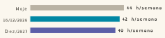
| Bancos | Agências fechadas; Pix e apps funcionam |
| Boletos | Vencidos hoje: pague segunda (23) sem multa |
| B3 | Sem pregão; volta segunda |
| INSS | Sem perícia e sem atendimento presencial |
| Saúde | UPA, hospitais e Samu 192 em 24 h |
Feriado nacional pela Lei 14.759/2023. Há marchas previstas na Avenida Paulista e a 47ª Marcha em Salvador. História na p.6.
Até o fechamento não havia regra divulgada para escalas especiais da saúde. Acompanhe o texto do decreto no Diário Oficial.
O jornal não toma partido. Publica fatos, números oficiais e declarações atribuídas, com o mesmo tratamento a todos os lados.
Santa Casa. Na Tribuna Popular da Câmara Municipal, na quinta (19), o diretor-geral da Santa Casa de Sobral, Frei Bartolomeu Schultz, apresentou os números do hospital: referência de alta complexidade para 55 municípios, centro de hemodiálise com 64 poltronas, o maior do estado, e déficit de cerca de R$ 3 milhões por mês. Pediu verba para reforma e custeio, emendas da bancada cearense e a passagem da contratação dos serviços da esfera municipal para a estadual. Em 11/11, a direção já tinha discutido contratualização e "vazios assistenciais" com a Secretaria da Saúde do Ceará.
Calor. A Funceme prevê para hoje máximas de 31 °C nas serras a 39 °C no centro-sul e no Litoral Norte, com umidade perto de 25% entre 13 h e 16 h no centro-sul. Chuva, só isolada e de madrugada em pontos do litoral. O fim de semana segue entre 32 e 39 °C, com vento de até 36 km/h; no início da semana, mais nuvens no centro-norte.
Operação Dominus. A 2ª fase, do Gaeco Norte (MPCE) com Draco Norte, PM e Ciopaer, prendeu 4 suspeitos de integrar uma facção que cobrava "taxas" de comerciantes em Alcântaras e Meruoca. Foram 25 mandados em Fortaleza, Meruoca e Russas, com mais de 180 policiais e 15 promotores.
Segurança. Os crimes violentos contra o patrimônio caíram de 2.389 em outubro de 2025 para 1.037 em outubro de 2026 (−56,6%), segundo a Supesp/SSPDS. No ano, a queda é de 53,3%; não há recorte de Sobral.
72 h Prefeitura. O Refis 2026 de Sobral oferece até 100% de desconto em juros e multas, com atendimento itinerante; a emissão da nova identidade (CIN) passou de 1.700 atendimentos.
| Sex 20 | 31–39 °C · ar seco à tarde |
| Sáb–dom | 32–39 °C · vento até 36 km/h |
| Seg 23 | Mais nuvens no centro-norte |
Funceme (19/11). Previsão sem número específico para Sobral; as fontes variam entre 38 e 39 °C.
Água ao longo do dia, roupa leve, sombra entre 11 h e 16 h e atenção a idosos, crianças e quem usa diurético.
No DivulgaCandContas, os dois mais votados para governador declararam gastos de R$ 11,35 mi e R$ 12,48 mi. Dados ainda podem mudar.
Nomes de suspeitos não são publicados aqui. Prisão não é condenação: vale a presunção de inocência.
Câmbio. O dólar comercial fechou a quinta (19) a R$ 5,9344, alta de 1,15%, a sexta seguida e o maior valor desde abril de 2025; na semana, subiu cerca de 4,95%. O Banco Central vendeu US$ 1 bilhão em leilão extraordinário à vista, com taxa de corte de R$ 5,86, e a moeda voltou a subir à tarde. As reportagens citam a economia menor prevista para 2027 no ajuste fiscal (de R$ 56 bi para R$ 50 bi), a indefinição sobre a futura equipe econômica e a alta dos juros americanos.
Bolsa e juros. O Ibovespa fechou em 166.376 pontos (−0,69%). Os juros futuros subiram ao longo do dia e o Tesouro Direto suspendeu a negociação de prefixados e IPCA+ à tarde, deixando só Tesouro Selic e Reserva. Antes da pausa, o Prefixado 2029 passava de 15% ao ano.
EUA. O Dow perdeu 1.101 pontos (−2,19%), a Nasdaq caiu cerca de 2,3% e o S&P 500, 2,0%. Pesaram o medo de inflação e de juros mais altos: a ata do Fed indica alta de 0,25 ponto em dezembro, com a taxa hoje em 3,75%–4,00%, e o diretor Christopher Waller citou a hipótese de 0,5 ponto. Os pedidos de seguro-desemprego somaram 203 mil.
Commodities. O Brent ronda US$ 92 e acumula queda perto de 20% em novembro. O ouro caiu 2,1%, segundo uma única fonte.
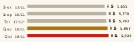
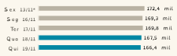
Dólar alto não é sinal para comprar nem vender nada às pressas. Viagem ou compra em dólar? Anote o valor, espere 72 h e decida com o orçamento na mão. Não é recomendação de investimento.
IPCA 2026: 5,11% · Selic no fim de 2027: 12,75% · PIB 2026: 1,72% · dólar no fim do ano: R$ 5,40. Novo Focus na segunda.
IPCA de outubro: +0,14%, com 4,63% em 12 meses, acima do teto de 4,5%. Energia e passagens aéreas aliviaram.
O BC vende dólares das reservas para dar liquidez. Não fixa preço: tenta conter movimentos bruscos.
Shenzhen. A reunião, paralela à cúpula da APEC, durou cerca de 90 minutos. Antes, Trump teve bilaterais com Xi e com Putin. Casa Branca e Kremlin divulgaram o mesmo texto: aumentar a produção de petróleo e gás, apoiar a reforma da ONU, afirmar que "não pode haver vencedores numa guerra nuclear" e dizer que o TPI não deve abusar de seus poderes. Taiwan e tarifas ficaram de fora; a trégua tarifária EUA–China vence em 10/01. Trump deu nota "12 de 0 a 10"; o Kremlin disse que "foi bem", sem anúncios significativos; Xi defendeu proibir armas nucleares. O senador democrata Chuck Schumer criticou a viagem.
Ucrânia. Kiev diz ter usado mísseis Neptune contra a ponte de Kerch, que liga a Rússia à Crimeia; os trens voltaram à tarde, segundo a RIA Novosti. Putin admitiu "danos sérios" e prometeu responder. Em Berlim, Merz, Macron e o premiê britânico receberam Zelensky e cerca de 40 delegações; o enviado Jared Kushner disse que Moscou aceita a presença europeia, sem data para a próxima rodada.
Gaza. Israel encerrou uma incursão de tanques além da "linha amarela" do cessar-fogo para destruir um túnel, segundo o Exército. O escritório de mídia do governo local, ligado ao Hamas, relatou cerca de 6.000 deslocados; o órgão que supervisiona a trégua acusa os dois lados de descumpri-la.
COP31. Em Antalya, na Turquia, o rascunho final encolheu de 18 para 9 páginas e perdeu a menção a carvão, petróleo e gás e ao roteiro voluntário liderado pelo Brasil. O encerramento está previsto para hoje.
72 h Venezuela. O secretário Pete Hegseth assinou em Caracas acordo de treino conjunto e troca de inteligência. Irã nega reportagem da CNN sobre plano contra autoridades em Washington; a Casa Branca diz não haver ameaça crível.
Shenzhen fica na margem leste do estuário do Rio das Pérolas, colada a Hong Kong. Era cidade de fronteira com cerca de 30 mil habitantes em 1979 e chegou a 17,56 milhões no censo de 2020, em 1.997 km². Tem clima subtropical de monções e o 4º maior porto de contêineres do mundo.
| Hoje 14h | Coletiva de Trump sobre a viagem |
| Hoje | Último dia previsto da COP31 |
| 11/12 | Prazo do orçamento nos EUA |
| 14–15/12 | Cúpula do G20 em Miami |
APEC: fórum de 21 economias do Pacífico. TPI: Tribunal Penal Internacional, em Haia. Linha amarela: limite de recuo das tropas israelenses no cessar-fogo de outubro de 2025.
Cada lado divulga números diferentes de drones e vítimas. Guarde quem afirma, quando e com que prova, e espere confirmação independente.
Respostas: Zarya · 24 · Lei 14.759/2023.
Dia Nacional de Zumbi e da Consciência Negra, criado pela Lei 12.519/2011 e feriado nacional pela Lei 14.759/2023 · Dia Mundial da Criança (ONU) · Dia do Biomédico.
James Collip ajudou a purificar a insulina em Toronto, em 1922. A ideia do 20/11 nasceu em 1971, com o Grupo Palmares, de Porto Alegre.
Do julgamento dos médicos em Nuremberg saiu o Código de Nuremberg (1947), de 10 princípios. O 1º: o consentimento voluntário é essencial. Na UTI, consentir é entender e poder escolher.
Resistência. A semana da OMS vai até 24/11 com o tema "One Health, one action". A campanha está alinhada ao novo Plano de Ação Global contra a resistência antimicrobiana, de 2026 a 2036. A resistência matou diretamente mais de 1 milhão de pessoas em 2021 e pode causar 39 milhões de mortes em 25 anos se a tendência continuar. Só pouco mais de um terço dos países aplica plenamente as diretrizes de prevenção de infecção da OMS.
Covid. O Ministério da Saúde enviará cerca de 1,41 milhão de doses adicionais da vacina Comirnaty aos estados, para crianças de 6 meses a menos de 5 anos, gestantes, pessoas com 60 anos ou mais e grupos especiais. Em 2026, os casos de SRAG por covid caíram 62% e os óbitos, 70% em relação a 2025.
Sarampo e mpox. Segundo o ministério, o Brasil mantém a eliminação do sarampo apesar do avanço da doença em países das Américas, e os casos de mpox seguem cerca de 90% abaixo de 2022. O Rio recebeu mais de mil frascos de vacina contra mpox.
Contexto Doença falciforme. Passou a ser de notificação compulsória pela Nota Técnica 2/2025, com registro em até 7 dias no e-SUS Sinan. O ministério estima de 60 mil a 100 mil pessoas com a doença no país. Levantamento do IEPS com dados do SUS mostrou que as internações subiram 47% entre 2012 e 2023; entre os registros com raça informada, 74,7% eram de pessoas negras, e a média mensal de óbitos entre negros foi 4,8 vezes a de brancos.
29/10 Anvisa. Registrou mais cinco canetas de GLP-1, três de liraglutida e duas de semaglutida; são 20 aprovadas em 2026.
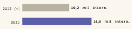
Ensaio publicado no NEJM em meados de 2026, com cerca de 1.000 pacientes em choque séptico no pronto-socorro: vasopressor precoce com menos fluido não mudou os dias vivo e fora do hospital (mediana de 76 nos dois braços), mas teve menos edema pulmonar (0,6% × 5,0%). Siga o protocolo institucional.
| Crianças | 6 meses a < 5 anos |
| Gestantes | todas |
| Idosos | 60 anos ou mais |
| Especiais | conforme o PNI |
Cultura antes, espectro certo, reavaliar em 48–72 h e prazo curto quando a evidência permite. Cada dose a mais seleciona resistência.
Dor, febre, desidratação e calor podem desencadear crise. Analgesia rápida e procurar síndrome torácica aguda. Mais na p.9.
Termina em 30/11. A decisão sobre rastrear câncer de próstata é individual e compartilhada com o médico.
| Etapa | O que fazer | ⚠️ Pegadinha de prova |
|---|---|---|
| 1. Reconhecer | Temperatura central > 40 °C + disfunção do SNC (confusão, convulsão, coma). Clássica: idoso, doença crônica, onda de calor. Por esforço: jovem em exercício. | Pele seca não é obrigatória: na forma por esforço, o suor costuma persistir. Medida axilar subestima: use retal ou esofágica. |
| 2. Resfriar já | Imersão em água fria é o método mais rápido, preferido na forma por esforço. No idoso: evaporação (borrifar água e ventilar) + gelo em pescoço, axilas e virilha. | "Resfrie primeiro, transporte depois": atrasar o resfriamento pela transferência piora o desfecho. Meta: abaixo de 39 °C em até 30 min. |
| 3. Parar | Interromper o resfriamento ativo entre 38,5 e 39 °C, com temperatura contínua, para evitar hipotermia de rebote. | Dipirona e paracetamol não funcionam: o termostato não subiu, como na febre. Dantroleno não tem benefício. |
| 4. Suporte | Via aérea se rebaixado, volume em alíquotas com reavaliação, glicemia, benzodiazepínico para tremor ou convulsão. | Tremor durante o resfriamento produz calor: trate-o. Cardiopata idoso afoga com volume generoso. |
| 5. Complicações | CK, creatinina, potássio, coagulação, transaminases e gasometria: rabdomiólise, lesão renal, CIVD, fígado, SDRA. | Exame inicial normal não encerra o caso: transaminases têm pico em 24–72 h. Repita. |
Conteúdo educativo. Siga o protocolo institucional.
Mulher de 78 anos, hipertensa em uso de diurético, achada confusa em casa no 3º dia de calor. Temperatura retal de 41,2 °C, PA 92/50, FC 128, pele quente e seca.
Conduta: borrife água e ventile, gelo em pescoço, axilas e virilha, cristaloide em alíquotas com reavaliação, temperatura contínua e pare com 39 °C. Peça CK, creatinina, K, coagulograma e transaminases; suspenda o diurético e olhe rim e bexiga (p.10).
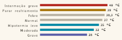
Leve 32–35 °C, moderada 28–32, grave < 28. Na parada com < 30 °C, até 3 choques e adrenalina suspensa; entre 30 e 35 °C, intervalo dobrado (ERC 2021). Instável: reaquecimento extracorpóreo.
Hipertermia maligna (halogenado → dantroleno) · síndrome neuroléptica maligna (rigidez) · serotoninérgica (clônus) · simpatomiméticos · tireotoxicose · sepse e meningite.
Diuréticos, anticolinérgicos, antipsicóticos, betabloqueadores e estimulantes reduzem a tolerância ao calor. Revise a lista do idoso no verão.
| Etapa | O que fazer | ⚠️ Pegadinha de prova |
|---|---|---|
| 1. Classificar | OMS: Hb < 13 g/dL no homem e < 12 na mulher não gestante. Olhe VCM, RDW e reticulócitos: índice reticulocitário baixo = produção insuficiente. | No começo da ferropenia e na anemia mista, o VCM pode estar normal. RDW alto ajuda a suspeitar. |
| 2. Ferritina | < 30 ng/mL confirma ferropenia; a AGA 2020 aceita < 45 no adulto anêmico. Com inflamação, valores até ~100 ainda podem ser ferropenia. | Ferritina "normal" na sepse, na DRC ou na IC não descarta falta de ferro. |
| 3. Inflamação | Anemia da doença crônica: ferro sérico e saturação de transferrina baixos, ferritina normal ou alta, hepcidina alta prendendo o ferro. Em geral normocítica. | Saturação < 20% aparece nas duas. Quem separa é a ferritina com o contexto (e o receptor solúvel de transferrina, que sobe só na ferropenia). |
| 4. Achar a causa | Homem e mulher na pós-menopausa com ferropenia: endoscopia alta e colonoscopia. Pense em doença celíaca, H. pylori, perda menstrual e dieta. | Repor ferro sem investigar pode atrasar o diagnóstico de câncer colorretal. |
| 5. Tratar | Ferro oral uma vez ao dia ou em dias alternados. Ferro IV se intolerância, má absorção, doença inflamatória intestinal ativa, DRC, IC ou necessidade rápida. | Reticulócitos sobem em cerca de 1 semana. Sem resposta em 2–4 semanas: adesão, perda contínua ou diagnóstico errado. |
Conteúdo educativo. Siga o protocolo institucional.
Homem de 66 anos internado por pneumonia. Hb 9,1 g/dL, VCM 76 fL, ferritina 85 ng/mL, saturação de transferrina 9%, PCR alta. Sem sangramento visível.
Conduta: ferropenia provável apesar da inflamação (ferritina < 100 com saturação < 20%). Programe endoscopia alta e colonoscopia, reponha ferro e não transfunda só pelo número se estiver estável.
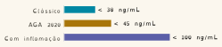
Hemólise: reticulócitos, LDH e bilirrubina indireta altos. Febre ou dor torácica com infiltrado novo = síndrome torácica aguda. Hidroxiureia reduz crises. Notificação compulsória.
Microcitose acentuada com Hb pouco baixa, hemácias altas e ferritina normal. Índice de Mentzer (VCM ÷ hemácias) < 13 sugere; não dê ferro sem falta.
Na IC com fração reduzida e ferropenia, o ferro IV reduziu internações por IC em ensaios como AFFIRM-AHF e IRONMAN.
Transdutor convexo, cortes longitudinal e transversal de cada rim. A pelve dilatada aparece como área anecoica que se ramifica no seio renal. Graus: leve (pelve dilatada, cálices preservados), moderada (cálices dilatados, córtex preservado) e grave (cálices em balão e córtex afinado). Sempre olhe a bexiga: retenção causa hidronefrose bilateral. No ensaio STONE, começar pela ultrassonografia na suspeita de cálculo não aumentou diagnósticos graves perdidos e reduziu radiação em relação à tomografia.
⚠️ Pegadinha: vasos do hilo e cistos parapiélicos imitam pelve dilatada: o Doppler colorido separa. Bexiga muito cheia dilata os dois rins: esvazie e reavalie. Desidratação pode esconder hidronefrose leve.
A onda J de Osborn é uma deflexão positiva no ponto J, mais visível nas derivações inferiores e precordiais laterais, que cresce à medida que a temperatura cai. Acompanham: bradicardia sinusal, PR, QRS e QT longos e artefato de tremor. FA é comum abaixo de 32 °C; abaixo de 28 °C, o risco de FV sobe, e a manipulação brusca do paciente pode precipitá-la.
⚠️ Pegadinha: onda J também aparece na hipercalcemia, em lesão cerebral aguda e na repolarização precoce. O tremor imita arritmia. O tratamento é reaquecer, não o antiarrítmico.
CaO₂ = 1,34 × Hb × SaO₂ + 0,003 × PaO₂. Com Hb 7, uma SpO₂ de 98% carrega cerca da metade do oxigênio de quem tem Hb 14. Na maioria dos pacientes ventilados, mirar SpO₂ de 92–96% e baixar a FiO₂ evita hiperóxia: no HOT-ICU, PaO₂ alvo de 60 × 90 mmHg deu mortalidade em 90 dias de 42,9% × 42,4%; no PILOT, alvos de 88–92, 92–96 e 96–100% não diferiram. Com risco de hipercapnia, 88–92%.
⚠️ Pegadinha: o oxímetro superestima a saturação na má perfusão e em pele mais escura e lê "normal" na intoxicação por CO. Quando a decisão depende do número, colha gasometria arterial.
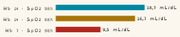
Hidronefrose bilateral? Olhe a bexiga e esvazie antes de concluir.
Corcova após o QRS no paciente frio? Onda J de Osborn: reaqueça.
SpO₂ 98% com Hb 7? Conteúdo de O₂ pela metade.
Anthropic. A empresa vendeu 980 milhões de ações a US$ 83, acima da faixa de US$ 70 a 78, e captou US$ 81,3 bilhões, acima dos US$ 75 bilhões da SpaceX em junho. É o primeiro laboratório de IA de fronteira a abrir capital. A ação, com o código ANT, teve o primeiro negócio às 11h48 de Nova York a US$ 111,50 (+34%), oscilou entre US$ 92,72 e US$ 114,99 e fechou a US$ 97,17, com cerca de 832 milhões de papéis negociados. A empresa também planeja captar US$ 26 bilhões com AMD, Broadcom, Google, Microsoft e Nvidia. As estimativas de valor de mercado divergem, de cerca de US$ 1,3 a 1,8 trilhão, conforme a contagem de ações. A liquidação da oferta está prevista para hoje.
Nvidia. No 3º trimestre do ano fiscal de 2027, divulgado em 17/11, a receita foi de US$ 115,8 bilhões (+103% em um ano), com US$ 107,6 bilhões de data center e margem bruta de 74,8%. A previsão para o próximo trimestre é de cerca de US$ 130 bilhões, sem receita de data center da China. O sistema Vera Rubin NVL72 já opera em grandes nuvens. Na quinta, a ação caiu 3,3% e a AMD, 7,7%, na onda de vendas.
16/11 Chips e Brasil. Segundo boletim do BB, o Departamento de Comércio dos EUA propôs exigir licença para exportar chips avançados de IA ao Brasil. É proposta, ainda sem regra final.
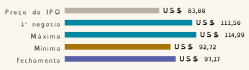
Oferta pública inicial: a primeira venda de ações ao público. O preço do 1º dia oscila muito e não diz o valor de longo prazo.
Ação "do momento" é gatilho de impulso. O jornal não trata de renda variável: regra das 72 h para qualquer decisão. p.20.
A atualização de novembro do Windows corrige uma falha já explorada no Outlook. Atualize hoje. p.19.
A virada. Na quarta (18), no Maracanã, o Athletico-PR abriu o placar com Vargas aos 10 minutos. Carrascal empatou aos 16 e Jorginho, de pênalti sofrido por Pedro, virou aos 26: Flamengo 2 × 1. No mesmo horário, o Cruzeiro bateu o Palmeiras por 2 a 1 no Mineirão. O site do clube rubro-negro resumiu: o time ficou "a um empate do título".
A conta. O Flamengo tem 79 pontos em 35 jogos; o Palmeiras, 73. Com empate no sábado, o Fla vai a 80 e o Palmeiras a 74; mesmo vencendo as duas últimas, o Palmeiras pararia em 80. O 1º critério de desempate é o número de vitórias, e o Flamengo teria 24 contra no máximo 23 do rival. Cálculo do jornal a partir da tabela. Se perder, o Fla segue 3 pontos à frente e depende só de si: pega o Coritiba em 29/11 e a Chapecoense em 2/12.
A rodada. Coritiba 0 × 1 Santos · Remo 2 × 0 Chapecoense · Grêmio 0 × 0 Bahia · Corinthians 4 × 0 Botafogo · Vasco 1 × 0 Internacional · Vitória 2 × 0 Bragantino. São Paulo × Fluminense, quinta à noite, no Morumbis: o Flu vencia por 1 a 0 no 1º tempo, gol de Hércules; placar final não confirmado no fechamento.
Artilharia. Kevin Viveros, do Athletico-PR, tem 21 gols, mas cumpre suspensão e só volta na última rodada. Pedro, com 20, não marcou na quarta.
Seleção. O Brasil de Ancelotti fechou 2026 com Japão 3 × 2 Brasil (14/11) e Singapura 0 × 7 Brasil (17/11), com três gols de Vini Jr. No ano foram 14 jogos: 9 vitórias, 2 empates e 3 derrotas. Na Copa, a eliminação veio nas oitavas, para a Noruega, por 2 a 1. As datas FIFA de 2027 começam em 22/3; os adversários ainda não foram anunciados.
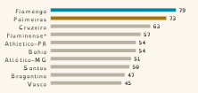
| 11 São Paulo* | 44 | 16 Corinthians | 40 |
| 12 Botafogo | 42 | 17 Internacional | 39 |
| 13 Coritiba | 42 | 18 Grêmio | 38 |
| 14 Vitória | 41 | 19 Remo | 32 |
| 15 Mirassol | 41 | 20 Chapecoense | 21 |
* 34 jogos. 17º a 20º caem. A Chapecoense chega no máximo a 30: rebaixada (conta do jornal).
Sáb 21, 16h30: Palmeiras × Flamengo, Nubank Parque. Dom 29, 16h: Coritiba × Flamengo. Qua 2/12, 21h30: Flamengo × Chapecoense, Maracanã.
Palmeiras × Grêmio, domingo 6/12, no Mané Garrincha, em Brasília. É a primeira final em jogo único em 38 edições; horário a definir pela CBF.
3 decisões do Palmeiras em 16 dias: Flamengo (21/11), final da Libertadores (28/11) e final da Copa do Brasil (6/12).
Fares Lopes. Pela 4ª rodada, o Vila Real, de Sobral, empatou por 1 a 1 com o Ceará no domingo (15), no PV; os gols foram de Bruninho e João Victor. O time chegou a 7 pontos e lidera o Grupo B, à frente do Ceará (5) e do Atlético Cearense, que perdeu os dois jogos. Na soma geral, só o Icasa (9) tem mais pontos.
Os outros grupos. No A, o Icasa bateu o Quixadá por 1 a 0 (14/11) e lidera com 9. No C, o Fortaleza venceu o Palmácia por 2 a 0 na terça (17) e divide a ponta com o Tirol, ambos com 6; o Leão leva no saldo. O colunista Vladimir Marques, do Diário do Nordeste, aponta que Icasa e Vila Real podem garantir vaga antecipada. As datas da 5ª rodada não tinham sido divulgadas no fechamento.
Fortaleza. O 4º colocado da Série B, com 65 pontos, enfrenta o Criciúma no domingo (22), às 16h, no Heriberto Hülse. A volta é no sábado (28), às 20h, no Castelão. Com dois empates ou igualdade no agregado, o Fortaleza sobe. Um dado de alerta: em nove jogos como visitante contra o Criciúma, o Leão venceu só dois.
Ceará. O 0 a 0 com o CRB na última rodada livrou o Vovô da queda. O time fica na Série B em 2027. No outro playoff, Atlético-GO e Vila Nova jogam domingo, às 18h30, e sexta (27).
Série B, o desfecho. O Novorizontino foi campeão com 73 pontos, título inédito, e sobe com o Juventude. Caem Avaí, Londrina, América-MG e Ponte Preta.
Guarany e Junco. Sem notícia esportiva nova nas últimas 72 horas. O Guarany disputou a Série B do Cearense em 2026 e não está na Fares Lopes.
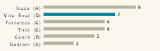
| Dom 22 | Criciúma × Fortaleza · 16h |
| Atlético-GO × Vila Nova · 18h30 | |
| Sex 27 | Vila Nova × Atlético-GO |
| Sáb 28 | Fortaleza × Criciúma · 20h · Castelão |
Começa em 5/1: Ceará × Horizonte; no dia 6, Fortaleza × Itapipoca. Dez clubes, turno único de 9 rodadas, Clássico-Rei na 7ª e final de volta em 7/3. Os dois últimos caem.
Venceu o Cruzeiro por 77 a 73, fora de casa, no domingo (16). É o 15º do NBB, com 2 vitórias e 6 derrotas.
Sem sorteio nem datas até o fechamento. Em 2026, o sorteio foi em 3/3 e a bola rolou em 25/3.
Nenhum clube sobralense está na elite do Cearense de 2027. A vitrine da cidade, por ora, é a Fares Lopes, que dá vaga na Copa do Brasil.
F1. O GP de Las Vegas, sem corrida sprint, teve o 1º treino livre na quinta à noite; o resultado não tinha sido publicado no fechamento. O 2º treino é na madrugada desta sexta, à 1h de Brasília, e a corrida, na madrugada de sábado para domingo, também à 1h. Kimi Antonelli, da Mercedes, confirmou o título no México; a equipe também já é campeã de construtores. Em Interlagos, venceu Lando Norris.
A tabela. Antonelli soma 390 pontos, seguido de Verstappen (279), Russell (262) e Hamilton (261). Leclerc aparece com 249 ou 251, conforme a fonte. O brasileiro Gabriel Bortoleto, da Audi, é o 14º, com 14 pontos, empatado com Hülkenberg e à frente no desempate. Depois de Las Vegas vêm Catar e Abu Dhabi.
Sul-Americana. Atlético-MG × Boca Juniors decidem o título no sábado (21), em jogo único, no Estádio Metropolitano Roberto Meléndez, em Barranquilla, na Colômbia. O horário não foi confirmado nas fontes consultadas.
Libertadores. Palmeiras e Estudiantes fazem a final em 28/11, em jogo único, no Centenário, em Montevidéu. Antes, o Palmeiras recebe o Flamengo pelo Brasileiro.
Champions. Não houve rodada nesta semana. A 5ª rodada, em 24 e 25/11, tem Arsenal × Dortmund, Manchester City × Napoli, Real Madrid × PSV, PSG × Roma e Lille × Bayern. Na 4ª, o Como venceu o Lens por 9 a 1, fora de casa.
Tênis. João Fonseca fecha 2026 em 46º no ranking da ATP, afastado por lesão; o próximo compromisso é uma exibição com Roger Federer em 5/12, no Pacaembu. No WTA Finals, Mirra Andreeva foi campeã sobre Elina Svitolina.
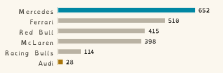
| Sex 20 | TL2 · 1h às 2h |
| Sex 20 | TL3 · 21h30 às 22h30 |
| Sáb 21 | Classificação · 1h às 2h |
| Dom 22 | Corrida · 1h |
| 1 Antonelli | 390 |
| 2 Verstappen | 279 |
| 3 Russell | 262 |
| 4 Hamilton | 261 |
A briga pelo vice segue aberta.
129 pontos ainda em jogo nas três últimas etapas: Las Vegas, Catar e Abu Dhabi.
Leclerc tem 249 ou 251 pontos e Lawson, 89 ou 87, conforme a fonte. O jornal publica as duas versões.
Corrida à 1h e plantão cedo? Veja o resumo pela manhã: sono também é estratégia de prova.
Vôlei feminino. Na quinta (19), o Osasco venceu o Pinheiros por 3 a 0 e o Brusque fez 3 a 0 no Mackenzie. O Sesc RJ Flamengo lidera com 18 pontos: seis jogos, seis vitórias e nenhum set perdido. Minas e Sesi Bauru têm 17; Praia e Osasco, 15. O próximo jogo da líder é na segunda (23), às 21h, contra o Osasco, com transmissão do SporTV2.
Vôlei masculino. O Sada Cruzeiro lidera a Superliga com 17 pontos em seis jogos, todos vencidos. Itambé Minas, com um jogo a menos, e Renata somam 11; Praia tem 8 e São José, 7. No sábado (21), às 16h, o Sada visita o São José.
NBB. O Minas Storm lidera invicto, com 8 vitórias. Mogi tem 7–1; Unifacisa e Pinheiros, 6–2; o Flamengo é o 5º, com 5–2. Unifacisa × Flamengo, Pato × Corinthians, Pinheiros × Cruzeiro e Osasco × Minas jogaram na quinta (19), mas os placares não estavam confirmados no fechamento.
Seleção Feminina. Arthur Elias convocou o time para os últimos amistosos do ano, contra o Japão, fora de casa: 29/11, em Hiroshima, e 5/12, em Okayama. Em outubro, o Brasil venceu a Argentina por 3 a 1 e empatou em 2 a 2. A Copa do Mundo Feminina de 2027 será no Brasil, entre junho e julho.
Tênis. Mirra Andreeva venceu Elina Svitolina e ficou com o título do WTA Finals.
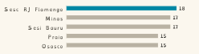
| 1 Minas Storm | 8–0 |
| 2 Mogi | 7–1 |
| 3 Unifacisa | 6–2 |
| 4 Pinheiros | 6–2 |
| 5 Flamengo | 5–2 |
Antes dos jogos de quinta. Fontes: LNB e O Tempo.
29/11 em Hiroshima e 5/12 em Okayama. Horários ainda não informados; pelo fuso, devem cair de madrugada ou de manhã no Brasil.
| Sex 20 | F1 Las Vegas: TL2 à 1h e TL3 às 21h30 | Sáb 21 | Palmeiras × Flamengo, 16h30 · Sada × São José, 16h · Sul-Americana |
| Sáb 21 | F1: classificação à 1h | Dom 22 | F1: corrida à 1h · Criciúma × Fortaleza, 16h |
0 sets perdidos pelo Sesc RJ Flamengo em seis jogos da Superliga.
Será a primeira Copa do Mundo Feminina disputada na América do Sul, em junho e julho de 2027.
Uma partida de vôlei feminino na TV, em família, ensina sem sermão que esporte é de todo mundo.
GTA VI. A Rockstar lançou o jogo na quinta (19), só para PS5 e Xbox Series, sem versão para PC. Nos EUA, a edição padrão custa US$ 79,99; o download chega a 212 GB e a caixa física traz só um código. Um estudo citado pela Exame estima a pré-venda acima de US$ 1,5 bilhão; o portal SGC relatou recorde de 7,9 milhões de pessoas em transmissões ao vivo. As notas da crítica ainda estavam se consolidando no fechamento.
Zarya, 28. Em 20/11/1998, um foguete Próton levou ao espaço o Zarya ("aurora", em russo), o primeiro pedaço da Estação Espacial Internacional. Construído pela Rússia com dinheiro dos EUA, deu energia e propulsão à estação nos primeiros meses. Duas semanas depois, o ônibus espacial acoplou o módulo Unity.
Windows 1.0, 41. Também num 20 de novembro, em 1985, a Microsoft lançou a primeira versão do Windows: janelas lado a lado, sem sobreposição, rodando sobre o MS-DOS.
Mandelbrot, 102. Benoît Mandelbrot, que deu nome aos fractais, nasceu em 20/11/1924, em Varsóvia. O conjunto que leva seu nome nasce de uma regra simples repetida sem fim.
Lua. A Artemis III, em 2027, virou teste de acoplamento em órbita baixa; o pouso tripulado passou para a Artemis IV, no início de 2028. Em 28/09, a Starship chegou pela primeira vez à órbita.
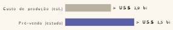
Mundo aberto não tem "fim de fase", e o cérebro não recebe o sinal de parar. Marque o fim antes: "duas missões" ou "até 23h", com alarme.
Fractal: forma que repete o próprio desenho em escalas menores. Brônquios, vasos e a costa do Ceará vistos do alto seguem essa lógica.
Jogos Vorazes: Amanhecer na Colheita está entre as estreias da semana, com lançamento mundial marcado para 20/11. Confira a sessão local.
| Sáb 21 | Palmeiras × Flamengo (16h30) · final da Sul-Americana |
| Dom 22 | GP de Las Vegas, 1h · Criciúma × Fortaleza |
| Ter 24 | Fim da Semana Mundial da Resistência Antimicrobiana |
| Sex 27 | Black Friday |
| Sáb 28 | Final da Libertadores, em Montevidéu |
| Ter 1º/12 | Dia Mundial de Luta contra a Aids |
Começou com as 19 toneladas do Zarya. Pronta, passou de 400 toneladas, montadas em órbita peça por peça, em mais de 40 voos.
Ano forte. Em outubro, a Fenabrave contou 489.119 emplacamentos somando todos os segmentos. De janeiro a outubro foram 4.722.650 unidades, alta de 12,62%: o 2º maior acumulado da série, atrás só de 2011. A entidade elevou a projeção de crescimento de 2026 de 8,6% para 12,8%, perto de 5,6 milhões de unidades.
Eletrificados. Híbridos e elétricos somaram 524.766 unidades no ano, mais que o dobro de 2025. Pela conta do jornal, são cerca de 11% do total. Caminhões, ônibus e implementos recuaram 0,85% no ano, em parte porque outubro teve 21 dias úteis, contra 23.
Juros. Com a Selic em 13,75%, o crédito segue caro. No financiamento, compare o Custo Efetivo Total (CET), que soma juros, tarifas e seguros, e não só a parcela.
Recall. A Volkswagen convocou neste ano cerca de 150 mil carros (T-Cross, Nivus, Tera, Polo e Virtus) por falha no freio de estacionamento. A consulta de qualquer recall é gratuita, pelo chassi, no serviço oficial do gov.br.
Combustível. Um agregador com dados da ANP mostra a gasolina perto de R$ 6,52 por litro em novembro; o boletim oficial da semana não foi conferido. No flex, o etanol compensa quando custa até cerca de 70% da gasolina.
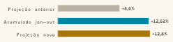
Pegue o chassi no documento, consulte no gov.br ("Realizar consulta sobre recall de veículos") e agende o reparo, que é gratuito e não tem prazo para acabar.
Antes de pensar em um, mapeie onde carregar: em casa, no trabalho e na estrada até Fortaleza. Sem tomada certa, a conta não fecha.
Divida o preço do etanol pelo da gasolina. Abaixo de 0,7, o etanol tende a sair mais barato por quilômetro.
Cote o seguro antes de fechar a compra: o valor muda muito de um modelo para outro e entra no custo mensal.
| Sinal | O que costuma ser | O que fazer |
|---|---|---|
| Endereço quase igual | Site espelho, com hífen, letra trocada ou final estranho. | Entre pelo app oficial ou digitando o endereço. |
| Anúncio patrocinado | Link pago em buscador ou rede social levando a loja falsa. | Não clique no anúncio: busque a loja você mesmo. |
| "Taxa de entrega" por SMS | Falso rastreio ou falsa taxa de importação. | Confira só no site oficial dos Correios ou da transportadora. |
| Perfil novo, muitos elogios | Depoimentos comprados e seguidores falsos. | Veja CNPJ, endereço e histórico de reclamações. |
| "De R$ 2.000 por R$ 1.000" | Preço inflado antes da data: a "metade do dobro". | Compare com o preço anotado hoje. |
| Item genérico | Veredito |
|---|---|
| Ventilador ou climatizador | ⏳ Compare a potência e o consumo (selo Procel) antes do dia 27 |
| Garrafa térmica para o plantão | ✅ Útil e barata: compre se já está na lista |
| Protetor solar FPS 30 ou mais | ✅ Necessidade real no sol de Sobral |
| Celular "preço de Black" hoje | ⏳ Esperar 27/11 e comparar |
Sem marca, sem link e sem comissão. Veredito: esperar · decidir após 72 h · preparar lista.
O Procon-SP mantém uma lista pública de lojas virtuais com reclamações não resolvidas. Consulte antes de pagar.
Avise o banco pelo app na hora, bloqueie o cartão, guarde prints e registre boletim de ocorrência. Detalhes e ferramentas oficiais na p.21.
Compare o preço final, com frete e prazo. Desconto que some no frete não é desconto.
Print do anúncio, nota fiscal e conversa com a loja: é sua prova se o produto não chegar.
| Item | Veredito | Por quê |
|---|---|---|
| GTA VI (US$ 79,99 nos EUA) | ✅ Só em loja oficial | Saiu em 19/11 para PS5 e Xbox. "Chave barata" em grupo ou site desconhecido é golpe. |
| "Ações da Anthropic" oferecidas por mensagem | 🔴 Golpe | A ação estreou na Nasdaq em 19/11 (oferta a US$ 83; fechou a US$ 97,17). Ninguém vende "cota" por WhatsApp com lucro garantido. Não é recomendação.* |
| Climatizador no calorão | ⏳ Decidir após 72 h | Calor de 39 °C dá urgência artificial. Compare consumo e potência e decida na segunda. |
| Celular "preço de Black" antes do dia 27 | ⏳ Esperar a data | Anote o preço hoje e compare em 27/11 em dois sites oficiais. |
| Plano anual de app "80% off" | ⏳ Preparar lista | Veja antes como cancelar e se a renovação vem com preço cheio. |
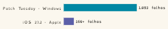
Ative a instalação automática no iPhone (Ajustes → Geral → Atualização de Software) e no Windows Update.
1ª parcela até 30/11, 2ª até 20/12. Ordem segura: dívida cara, reserva, e só depois a lista.
Compra pela internet tem 7 dias para arrependimento, com frete devolvido (CDC, art. 49).
O que houve. Na tarde de quinta (19), com o dólar na 6ª alta seguida e os juros futuros subindo, o Tesouro Direto suspendeu a negociação dos títulos prefixados e atrelados ao IPCA. Às 14h50, só o Tesouro Selic e o Tesouro Reserva estavam disponíveis, segundo o InfoMoney. Antes da pausa, o Prefixado 2029 passava de 15% ao ano e o IPCA+ 2032 pagava IPCA + 7,82%.
Por que suspende. Quando as taxas mexem rápido demais, o Tesouro interrompe as ofertas para recalcular preços. É a marcação a mercado: se a taxa sobe, o preço do título que você já tem cai no dia. Quem leva o título até o vencimento recebe a taxa contratada na compra; quem vende antes recebe o preço daquele dia, que pode ser maior ou menor.
A doutrina. O Pequeno Manual do Bastter.com resume a ideia central: patrimônio se acumula, não se gira. A renda verdadeira vem do trabalho, e a renda fixa serve para proteger o poder de compra, não para "ganhar no giro". O manual manda esquecer a hora certa de entrar ou sair: define-se um percentual fixo de renda fixa no patrimônio e os aportes seguem o plano, com ou sem manchete.
O que fica de fora. A filosofia Bastter também inclui ações de longo prazo, em carteira diversificada. Este jornal não trata desse tema: quem quiser conhecê-lo deve ler a fonte original e conversar com um profissional certificado.
Os números. A Selic está em 13,75% desde 4/11; o próximo Copom decide em 9/12. A poupança rende 0,5% ao mês mais TR enquanto a Selic estiver acima de 8,5%: 0,6624% para aniversário em 1º/11 e 0,6202% em 1º/12, porque a TR caiu. A inflação de 12 meses chegou a 4,63% em outubro, acima do teto da meta. O IR da renda fixa segue regressivo: 22,5% até 180 dias, 20% até 360, 17,5% até 720 e 15% depois.
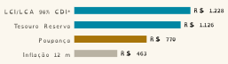
| Tesouro Reserva | 100% da Selic, liquidez diária |
| Tesouro Selic 2031 | Selic + 0,1082% |
| IPCA+ 2032 / 2040 | IPCA + 7,74% / 7,49% |
| Prefixado 2029 | 14,94% ao ano |
Taxas mudam várias vezes ao dia. Fonte: InvestNews, 18/11.
Trabalhe, gaste menos do que ganha, aporte sempre no mesmo percentual e não tente adivinhar o mercado.
FGC: poupança, CDB, LCI e LCA, até R$ 250 mil por CPF e instituição, com teto de R$ 1 milhão a cada 4 anos. Tesouro: garantia do Tesouro Nacional. Em 2026, o CMN endureceu regras para os bancos que captam com o FGC.
Na simulação, a LCI rende R$ 1.228 e a inflação come R$ 463: sobram cerca de R$ 765 de poder de compra. A poupança deixa perto de R$ 307.
Taxa "imperdível" num dia de pânico? Espere três dias, leia o contrato e confira a garantia. Quem tem pressa é quem vende.
Imóvel financiado. Compare o CET, custo efetivo total, e não só a taxa: ele soma juros, seguros e tarifas. Na tabela SAC, a parcela começa maior e cai; na Price, é fixa, mas o total de juros pago tende a ser maior. Some ainda ITBI, escritura, registro, IPTU, condomínio e manutenção. Só é dono quem registra o título no Cartório de Registro de Imóveis (Código Civil, art. 1.245).
Terreno. Peça a matrícula atualizada, com ônus, e certidões do vendedor. Lote de loteamento não registrado não pode ser vendido (Lei 6.766/1979, art. 37). Na zona rural, confira CCIR, ITR e o Cadastro Ambiental Rural.
Veículo. Carro é, quase sempre, consumo: perde valor e cobra seguro, IPVA, manutenção e energia. O mercado vai bem: de janeiro a outubro, 4,72 milhões de emplacamentos, alta de 12,6%, e os eletrificados mais que dobraram, segundo a Fenabrave. Vender bem não significa que comprar seja investimento. No usado: débitos, recall, laudo cautelar e transferência no Detran em até 30 dias.
Revenda. Comprar na Black Friday para revender é comércio: formalize. Em 2026, o MEI fatura até R$ 81 mil; a LC 238/2026 prevê R$ 110 mil em 2027, se houver previsão orçamentária. Emita nota: o comprador tem 30 dias para reclamar de defeito em não durável e 90 dias em durável (CDC, art. 26). Preço muito abaixo do mercado é alerta de receptação (Código Penal, art. 180).
Golpes da semana. A Febraban listou promoções falsas por e-mail, SMS e WhatsApp, sites que imitam lojas conhecidas, perfis falsos e anúncios patrocinados em buscadores. Procons alertam para vídeos de famosos manipulados por IA e vozes clonadas em falsas cobranças de frete. Banco não pede "teste de Pix", estorno nem instalação de aplicativo. Caiu? Avise o banco na hora: o MED, do BC, aceita pedido de devolução em até 80 dias.
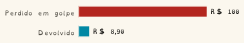
Registrato e Valores a Receber (BC) · BC Protege+, contra contas abertas em seu nome · consulta de CNPJ na Receita · lista "Evite esses sites" do Procon-SP · Consumidor.gov.br.
Compra pela internet pode ser desfeita em 7 dias após o recebimento, com devolução do valor e do frete (CDC, art. 49).
A Senacon recomenda cartão de crédito ou intermediador conhecido; cartão virtual reduz o risco. Pix direto a desconhecido não tem volta garantida.
O jornal não é advogado nem consultor. Bem de valor alto: 72 horas, advogado ou corretor com Creci e uma pessoa de confiança.
O dólar fechou a R$ 5,9344 na quinta (19), 6ª alta seguida, mesmo com venda de US$ 1 bilhão pelo BC. A Selic está em 13,75% desde 4/11. Hoje a B3 não abre (pág. 4).
O Senado concluiu o PLP 299/2026 em 18/11; o texto passou por 69 a 2 no turno suplementar. A Câmara prevê votar na segunda (23); há quem cite terça (24) (pág. 2).
O Brent ronda US$ 92 e cai quase 20% em novembro. A declaração de Shenzhen fala em produzir mais petróleo e gás. Na bomba pesam impostos, refino e o dólar alto (pág. 5).
Flamengo 79 × Palmeiras 73: empate no sábado (21) dá o título. O Palmeiras ainda decide a Libertadores (28/11) e a Copa do Brasil (6/12). O Patch Tuesday de 10/11 corrigiu mais de mil falhas; uma já era explorada.
A Funceme prevê até 39 °C e umidade perto de 25% à tarde. Idoso com tontura, confusão ou pouca urina precisa de avaliação. F1 em Las Vegas: domingo, 1 h (pág. 14).
As folhas. Um provérbio iorubá repetido nos terreiros diz kò sí ewé, kò sí òrìṣà: sem folha, não há orixá. Ossaim é o orixá das folhas, e o Candomblé guarda um saber botânico transmitido de boca em boca. Muitos terreiros também acolhem e escutam a vizinhança. A Política Nacional de Saúde Integral da População Negra (Portaria 992/2009) prevê reconhecer os saberes populares de saúde, inclusive os preservados pelas religiões de matriz africana.
O abiku. Para os iorubás, abiku é a criança que "nasce para morrer" e volta a nascer; os igbos falam em ogbanje. Famílias davam nomes como Kokumo, "este não morre mais". O médico ganês Felix Konotey-Ahulu reuniu nomes tradicionais da doença em línguas da África Ocidental, ligados a crises de dor que vão e voltam. Vários autores levantam a hipótese de que o abiku registrava, na linguagem do sagrado, a alta mortalidade infantil da falciforme.
A ciência. Em 1910, o médico James Herrick, de Chicago, descreveu hemácias "em forma de foice" num estudante de odontologia nascido em Granada, no Caribe. Em 1949, Pauling, Itano, Singer e Wells mostraram na Science que a hemoglobina dessas pessoas migrava diferente na eletroforese: a primeira "doença molecular". Em 1957, Vernon Ingram achou a troca de um só aminoácido. E em 1954 Anthony Allison mostrou que o traço falciforme protege contra a malária grave, por isso o gene ficou comum onde a malária era endêmica.
O Brasil. O teste do pezinho do SUS rastreia hemoglobinopatias desde 2001. Em 2025, a doença falciforme passou a ser de notificação compulsória; o Ministério da Saúde estima de 60 mil a 100 mil pessoas vivendo com ela. A hidroxiureia, no estudo MSH, reduziu as crises de dor.
| Ideia | Hoje |
|---|---|
| Traço falciforme protege da malária grave | ✅ Comprovado |
| Hidroxiureia reduz crises de dor | ✅ Ensaio MSH, 1995 |
| O abiku "era" a falciforme | 🟡 Hipótese histórica |
| Acolhimento religioso ajuda a seguir o tratamento | 🟡 Plausível, pouco estudado |
| Chá de folhas trata a crise | 🔴 Sem prova: crise é urgência |
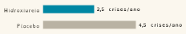
Conteúdo educativo. Siga o protocolo institucional.
Palmares. Na Serra da Barriga, hoje Alagoas, o Quilombo dos Palmares resistiu por boa parte do século XVII, com milhares de pessoas espalhadas em vários mocambos. Zumbi foi morto numa emboscada em 20/11/1695, e sua cabeça foi exposta no Recife, segundo os cronistas, para desmentir a fama de que ele era imortal. A Serra foi tombada pelo Iphan em 1986 e abriga o Parque Memorial Quilombo dos Palmares.
Malês. Na madrugada de 25/1/1835, em Salvador, cerca de 600 africanos, muitos deles muçulmanos, os malês (do iorubá imale), levantaram-se no fim do Ramadã. Foram vencidos em poucas horas, com cerca de 70 revoltosos mortos. Nos corpos, a polícia achou amuletos com trechos do Alcorão em árabe e papéis escritos: prova de que escravizados liam e escreviam. Vieram execuções, açoites e deportações para a África, como reconstitui o historiador João José Reis.
A lei. O Código Penal de 1890 (Decreto 847) punia o exercício ilegal da medicina (art. 156), "o espiritismo, a magia e seus sortilégios" (art. 157) e o ofício de curandeiro (art. 158). Na prática, os artigos atingiram sobretudo terreiros e curadores pobres e negros. Em fevereiro de 1912, em Maceió, o episódio conhecido como "Quebra de Xangô" invadiu e destruiu terreiros; objetos apreendidos estão hoje na Coleção Perseverança, em Alagoas. A Constituição de 1988 garante a liberdade de crença (art. 5º, VI).
Haiti. A tradição haitiana conta que, em agosto de 1791, uma cerimônia vodu em Bois Caïman, com o líder Dutty Boukman, abriu a revolução que fez do Haiti, em 1804, a primeira república fundada por ex-escravizados. Os detalhes da cerimônia são debatidos pelos historiadores: é marco de memória com partes lendárias.
O Disque 100 registrou cerca de 2,4 mil denúncias de intolerância religiosa em 2024, alta de cerca de 67% sobre 2023, e as religiões de matriz africana estão entre as mais atingidas. O 21 de janeiro é o Dia Nacional de Combate à Intolerância Religiosa (Lei 11.635/2007), em memória de Mãe Gilda, ialorixá de Salvador.
| 20/11 | Zumbi e Consciência Negra |
| 21/11 | Apresentação de Nossa Senhora |
| 22/11 | Cristo Rei · Santa Cecília |
| 26/11 | Dia Nacional de Ação de Graças |
| 29/11 | 1º domingo do Advento |
Acarape libertou seus escravizados em 1/1/1883 e virou Redenção; o Ceará aboliu a escravidão em 25/3/1884, quatro anos antes da Lei Áurea. José do Patrocínio chamou a província de "Terra da Luz".
Quilombo: do quimbundo kilombo, acampamento. Malê: do iorubá imale, muçulmano. Axé: do iorubá àṣẹ, a força que faz acontecer.
1. Em que serra ficava Palmares? 2. Em que ano foi a Revolta dos Malês? 3. Que artigo do Código de 1890 punia o curandeiro? Respostas: Serra da Barriga · 1835 · art. 158.
✝️ Bíblia · Lucas 4:18 e Gálatas 5:1
"Anunciar libertação aos cativos." · "Foi para a liberdade que fostes libertados."
Reflexão: Jesus abre a missão em Nazaré lendo Isaías, e Paulo pede que ninguém volte ao jugo. Liberdade é dom e responsabilidade. Hoje: solte uma cobrança antiga que prende alguém a você.
✡️ Torá · Levítico 25:10 e Deuteronômio 23:16
"Proclamai liberdade na terra a todos os seus moradores." · "Não entregarás ao senhor o servo que fugiu para ti."
Reflexão: o verso do Levítico está gravado no Sino da Liberdade, na Filadélfia, que os abolicionistas americanos adotaram como símbolo. Dar abrigo a quem foge é mandamento. Hoje: proteja quem está em desvantagem na equipe.
📜 Talmude · Kidushin 22b · Mishná, Pirkei Avot 6:2
"O ouvido que ouviu no Sinai 'são meus servos' e foi buscar outro senhor..." · "Livre é quem se dedica ao estudo."
Reflexão: os sábios explicam a orelha furada do servo que recusa a liberdade: quem ouviu que só serve a Deus não deveria se vender a um homem. E liberdade verdadeira se constrói estudando. Hoje: 25 minutos de estudo sem celular.
☪️ Alcorão · Surata 90:11–13
"E o que te fará saber o que é a subida íngreme? É libertar um escravo."
Reflexão: a virtude difícil é chamada de "subida íngreme". A tradição lembra Bilal, africano liberto, como o primeiro muezim do Islã: a voz que chama à oração era a de um ex-escravizado. Hoje: dê voz a quem costuma ficar calado na reunião.
☯️ Confúcio · Analectos 9:26
"Pode-se tirar o comandante de três exércitos; não se tira a vontade de um homem comum."
Reflexão: há uma liberdade que nenhuma força alcança: a decisão interior de não se curvar ao que é errado. Hoje: diga "não" a um pedido que fere seus valores, com calma e sem justificar demais.
☸️ Budismo · Dhammapada 160 e 276
"Cada um é o próprio protetor; que outro haveria?" · "Os Budas apenas apontam o caminho."
Reflexão: ninguém faz por você o esforço de se libertar de um hábito ou de um medo; o mestre só indica a direção. Hoje: escolha um hábito que te prende e dê o primeiro passo de 5 minutos.
| Ideia | Onde aparece |
|---|---|
| Proteger quem foge | Deuteronômio 23; os jangadeiros cearenses de 1881 |
| Libertar é virtude | Levítico 25, Alcorão 90, Lucas 4 |
| Liberdade interior | Pirkei Avot 6:2, Analectos 9:26, Dhammapada 160 |
| Pessoa existe com os outros | Ubuntu, na tradição nguni da África Austral |
Ubuntu (zulu e xhosa): "uma pessoa é pessoa por meio das outras pessoas". Sankofa (acã, Gana): o pássaro que olha para trás: volte e pegue o que ficou, para seguir adiante.
❓ Pergunta do dia: que liberdade você tem hoje que alguém lutou para conquistar?
Vem do árabe al-ḥurriyya, "a liberdade", pelo português medieval. A carta de alforria era o papel que tornava alguém livre diante da lei.
| Quem | O que fez | Lição de honra |
|---|---|---|
| Zumbi e Dandara | Zumbi liderou Palmares até 1695. Dandara é lembrada como guerreira e companheira dele; não há documento de época sobre ela, e a historiografia a trata como memória da tradição oral. | A memória também é um dever. |
| André Rebouças (1838–1898) | Engenheiro negro baiano, projetou docas no Rio e foi uma das vozes da Abolição; defendia dar terra aos libertos. Acompanhou D. Pedro II no exílio. | Lealdade e trabalho técnico a serviço de uma causa. |
| Maria Firmina dos Reis (1822–1917) | Professora no Maranhão, publicou Úrsula (1859), apontado como o primeiro romance abolicionista escrito por mulher no país, e abriu uma escola mista e gratuita em 1880. | Ensinar é libertar. |
| José do Patrocínio (1853–1905) | Jornalista abolicionista, filho de mulher escravizada; fez da imprensa campanha pela Abolição. | A palavra pública com responsabilidade. |
| Machado de Assis (1839–1908) | Neto de alforriados, tipógrafo na juventude; fundou e presidiu a Academia Brasileira de Letras (1897). | Constância: escrever todo dia. |
Num estudo publicado na PNAS em 2016, cerca de metade dos estudantes e residentes de medicina brancos avaliados endossou ao menos uma falsa crença sobre diferenças biológicas entre negros e brancos, como "pele mais grossa". Quem endossava avaliava como menor a dor do paciente negro nos casos simulados e recomendava tratamento menos adequado.
A Constituição torna o racismo crime inafiançável e imprescritível (art. 5º, XLII). Desde a Lei 14.532/2023, a injúria racial é tratada como racismo.
Úrsula, de Maria Firmina dos Reis, e o conto "Pai contra mãe", de Machado de Assis (1906): curtos, em domínio público e gratuitos na internet.
De quem é o trabalho invisível que sustenta o seu plantão? Agradeça a essa pessoa pelo nome hoje.
Sono. Um estudo com pulseiras de cerca de 47 mil adultos em 68 países, somando 7 milhões de noites, mostrou que noites quentes encurtam o sono: acima de 30 °C, a perda média foi de cerca de 14 minutos por noite. Os autores estimam que já se perdem cerca de 44 horas de sono por pessoa por ano, mais entre idosos e mulheres. Quarto escuro, ventilado e banho fresco antes de deitar ajudam.
Mente. Numa onda de calor em Boston, em 2016, universitários em dormitórios sem ar-condicionado tiveram tempo de reação 13,4% maior e 13,3% menos acertos por minuto em testes do que colegas em prédios refrigerados. Decisão importante, conversa difícil e estudo pesado: de preferência cedo.
Água. Perder cerca de 2% do peso em água piora a atenção e as funções executivas, segundo meta-análise de 2018. A sede chega tarde, sobretudo em idosos; a cor clara da urina é um guia simples. Álcool desidrata e piora o sono.
Descanso sem culpa. Pesquisas sobre recuperação mostram que se desligar mentalmente do trabalho no tempo livre se associa a mais bem-estar e menos exaustão. Feriado não é dívida; é manutenção.
Caráter. O baiano Milton Santos (1926–2001), geógrafo, foi o único brasileiro a receber o Prêmio Vautrin Lud, em 1994, tido como o "Nobel da geografia". A paranaense Enedina Alves Marques (1913–1981) formou-se em 1945 e é lembrada como a primeira engenheira negra do Brasil; trabalhou em usinas hidrelétricas do Paraná.
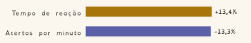
| Beber água antes da sede | ✅ |
| Quarto fresco e escuro melhora o sono | ✅ |
| Ventilador sozinho no calor extremo | 🟡 Molhar a pele ajuda |
| Cerveja "refresca" | 🔴 Desidrata |
| Branco às sextas "acalma" | ✨ Tradição; roupa clara esquenta menos ✅ |
Confusão, fala enrolada, pele muito quente ou desmaio no calor: pode ser intermação. Leve à sombra, molhe a pele, abane e ligue 192. Detalhes clínicos na p.8.
Calor rouba foco. Blocos de 15 minutos com pausa de 3, em lugar fresco, rendem mais que uma tarde inteira suando na mesma tarefa.
Leitura cultural e simbólica: num teste duplo-cego publicado na Nature em 1985, astrólogos não acertaram perfis acima do acaso. Use como lembrete de atitude, nunca como decisão.
Janelas abertas cedo e fechadas no pico do calor ✅, cortina clara ✅, pano úmido diante do ventilador 🟡. Sexta-feira de branco é tradição baiana e de terreiro em homenagem a Oxalá ✨; no calor, roupa clara também esquenta menos ✅. Elegância é discrição.
| Planta | Tradição ✨ | O que se sabe |
|---|---|---|
| Baobá | Árvore da ancestralidade em culturas africanas | Guarda água no tronco e vive séculos |
| Boldo-brasileiro | "Tapete-de-oxalá" | Uso popular na digestão; ⚠️ evitar na gravidez |
| Pau-d'água | Proteção da casa | ⚠️ Tóxico para cães e gatos |
| Manjericão | Boa sorte e proteção | Tempero; aroma agradável |
Chá não é remédio inofensivo: em uso contínuo ou com medicamentos, fale com o médico.
A Apple indica uso entre 0 e 35 °C de temperatura ambiente. Com 39 °C, tire a capa, evite carregar ao sol ou no carro fechado e, se aparecer o aviso de temperatura, espere esfriar à sombra.
Configurações › Windows Update › Verificar atualizações e reiniciar. Ela corrige uma falha do Outlook que já estava sendo explorada (p.19).
Na semana da Black Friday, a Febraban alerta para anúncios patrocinados falsos nos buscadores. Digite o site você mesmo ou use o app oficial.
No Chrome do computador, F12 › Lighthouse › Mobile gera notas de desempenho e acessibilidade e lista o que corrigir primeiro.
Transforme as suas anotações em baralhos com a ajuda da IA, revise cada carta, cite as diretrizes e venda para colegas. Nada de material protegido nem dado de paciente.
Escolha antes de abrir o celular uma tarefa de 25 minutos para a manhã. Feita, o resto do dia é descanso sem culpa (p.28).
Calor de 39 °C: intermação é > 40 °C com confusão, e o tratamento é resfriar já. Ferritina engana na inflamação. Dólar em alta não pede decisão por impulso.
Hoje, em 5 minutos: confira se há água, sombra e ventilador para os idosos da família e atualize o Windows e o iPhone.
Dar dipirona na intermação · medir temperatura axilar · dar ferro sem procurar sangramento · confiar na SpO₂ com Hb baixa · clicar em anúncio patrocinado de loja · comprar dólar no susto.
Jornal Diário 360 · Radar 360 Circunstancial · Ano I, nº 015 · fechamento na noite de 19/11/2026, véspera da edição, com os mercados no fechamento e a rodada de quinta. Produzido pelo Agente Editorial 360 com o Claude (Anthropic). Atualizações na p.2. Em saúde, siga o protocolo institucional; em finanças e compras, não há recomendação nem comissão, e o jornal não trata de renda variável. Gráficos e ilustrações originais; nenhuma foto de terceiros. Texto em OpenDyslexic.